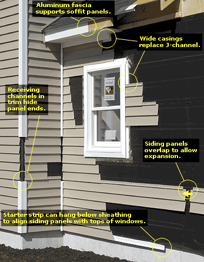

Originally introduced in the early 60's vinyl siding has become the most popular siding product in recent years. It has been estimated that vinyl siding is being used on as much as 40% of new construction in the United States! Typically patterned to offer a wood horizontal siding look vinyl is actually available in a number of different styles and a multitude of colors. Vinyl siding coloring is typically not painted on the exterior but is added during production meaning scratches will not reveal a different color underneath. While early versions of vinyl siding had a tendency to lose color or become brittle modern vinyl products have very long lasting color getting rid of the need to re-paint your home every 5-10 years as is necessary with several other materials. Vinyl siding is available in both seam and seamless versions. As with other materials the seamless siding is considered more attractive and better at repelling the elements.
Traditional vinyl siding has not been able to truly replicate the appearance of a solid wood siding. This failure can be traced to the fact that the vinyl siding was not solid however a new version of vinyl is now available. This version places a foam core behind the siding making the vinyl far more rigid and significantly increasing it's insulating value, from an R-value of less than 1.0 to 4.0. The additional rigidity also adds strength in situations where vinyl siding would have been likely to show damage from hail, golf balls, etc.. Nearly every manufacturer of vinyl siding offers a foam core version and while the cost is higher it is money well spent if you want to make certain your siding lays flat and stays that way over a long period of time.
Vinyl siding has enjoyed tremendous popularity in part due to the fact that it is sold as a "lifetime product with no maintenance". No product is maintenance free even if it only requires spraying off the grime that accumulates a few times a year. Without a doubt vinyl siding requires very little maintenance and is among the lower priced options on the siding costs scale but it is important that you realize vinyl will need to be repaired and or replaced eventually.
Vinyl siding is not without it detractors. Vinyl siding is made from Polyvinyl Chloride or PVC and is considered by many to be an environmental hazard since it is very difficult to dispose of in an ecologically friendly way. While environmentalists would like to do away with it vinyl siding seems destined to be a big part of the siding industry for the foreseeable future.